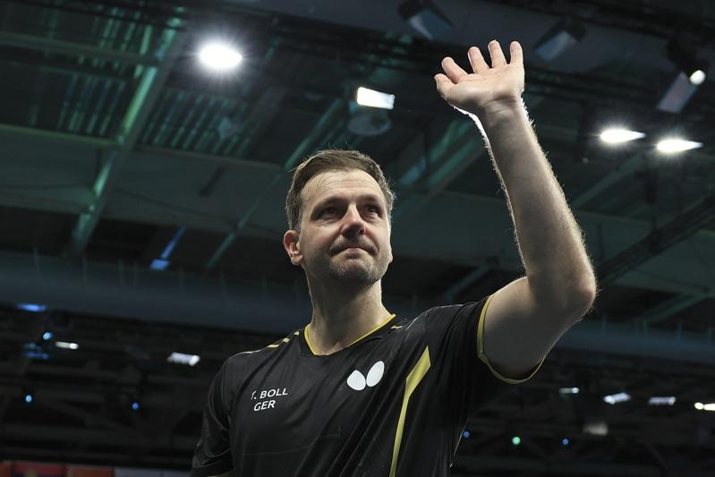
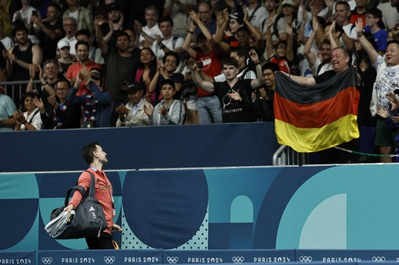

8月6日晚，是43岁的波尔在国际赛场的「最后一舞」。
当晚，巴黎奥运会乒乓球男团比赛，德国队与瑞典队争夺四强门票，出战男双和男单的波尔两场皆输，德国队被淘汰，波尔也结束了自己的第七次奥运之旅。
赛后，观众们起立鼓掌，现场大屏专门播放影片，向波尔致敬，掌声经久不息。德国队的教练、队员逐一过来拥抱波尔，连瑞典队主帅佩尔森也伸开双臂。
这场谢幕持续了很久。波尔拿起白毛巾擦脸，眼眶红了，鼻头也红了。他向四周致谢，从包里取出两件球衣，扔向看台。
「很艰难，不管比赛期间，还是比赛结束后。」在混合采访区，波尔这样描述心情，「输球让你感到失望，但从观众那得到的一切，又让你不知所措。」
说起「最后一舞」，波尔坦言：「我不能指望以胜利离开（奥运）舞台，毕竟中国队是乒乓球运动中最强的，但我还是希望这场比赛能获胜。但必须承认，瑞典队今天打得太好了，他们获胜当之无愧。」
说起单打输给好友卡尔伯格，波尔笑了：「他结束了我的国际职业生涯，这对我来说意义重大，他打得很好，表现更好，下周我们见面也许会讨论这场球。」
七届奥运会，四枚奥运奖牌，最高排名世界第一。谈到过往，波尔说：「我可能在前五名、前十名这个区间待了25年，这是我最大的成就，足以抵抗一切。」他停了停，「但最终，你会发现你的身体太慢了，保持最高的竞技水准越来越难。」
确实，时间就像一个巨大的舞台，足以让英雄衰老。生命有多少波澜壮阔，最后都将被人间烟火包裹。「也许我可以多陪陪家人了。」
波尔与中国队渊源颇深，从孔令辉、刘国梁，到王励勤、马琳、王皓，再到樊振东、林高远、王楚钦、林诗栋……他对抗了数代乒乓国手，也打败过不少国乒主力。
就在波尔告别国际赛场的第二天，中国男乒击败南韩队，顺利挺进四强。赛后在混合采访区，35岁的马龙、27岁的樊振东都表达了对波尔的敬意。
「波尔是所有乒乓球运动员都非常尊敬的人，他不仅球技好，人品也好。」马龙说。
回忆起与波尔2015年、2017年世乒赛组成的「马可波罗」组合，马龙表示：「对我来说，有幸跟他搭档过双打，大家都留下了一段美好回忆。」
马龙说，波尔就像老朋友一样亲切。「每次遇到他，大家都会打招呼，他跟国乒很多人交过手，从刘国梁、孔令辉，到最小的林诗栋，大家对他都非常尊重。」
「这么多年，他一直保持世界最高水平，非常不容易。他的影响力不光在德国，可能在整个欧洲都会影响更多年轻人，让他们喜欢乒乓球。」马龙说。
「波尔拥有一个很完美的职业生涯，他职业生涯的长度跟高度，可遇不可求。」樊振东由衷赞叹，「这个过程中，他要克服很多困难，包括他对自己很苛刻，很自律，才可能拥有这样的成就。」
「小胖」透露，他与波尔在生活中有很多有趣的交互，包括一些共同的爱好。「我祝愿他未来一切都好，一切顺利。」
马龙也表示，自己和波尔是微信好友，有时也会沟通。「我祝他未来无论是生活还是事业，都能够一帆风顺。」
「您有可能跟波尔一样，再多打几届奥运会么？」记者问马龙。「应该没戏了。」马龙笑答。
今年6月2日，波尔在微博上写道：「在我的职业生涯中，我非常享受在中国打的每一场比赛。我从乒乓球中学到了很多，也从你们和你们的文化中学到了很多。非常感谢你们多年来的支持，中国将永远是我的第二个家！」
而在波尔8月3日的微博上，则贴出了一张他和马龙在巴黎的合影，配文是「Legend（传奇）！」
确实，他们都是传奇。

巴黎奥运热话题
- 刘易士都无言 美国队没人晋级跳远决赛
- 球拍被记者踩断 王楚钦：我是受害者、不想再讨论
- 穿太辣制造不恰当气氛 巴拉圭泳手被逐出选手村
- 陈梦对孙颖莎引发球迷大战 北京要整治体育界饭圈文化
- 美运动员「紫脸」是屏幕偏色？ 中体育官员「恨国言论」被查